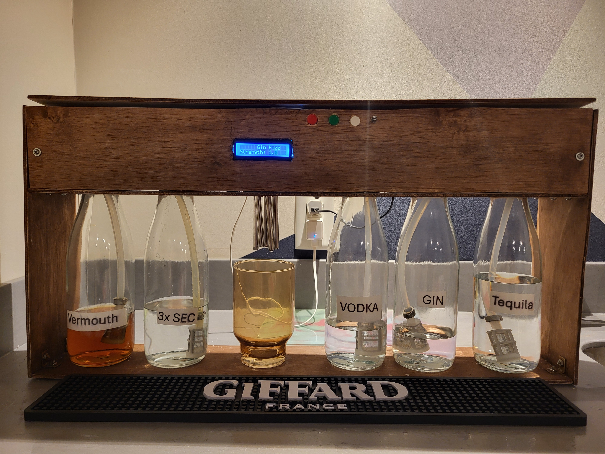

Robot Bartender Prototype

Project Inspiration
This idea was inspired by my uncle showing me an advertisement for the Bartesian last Christmas. The robot has a predetermined list of cocktail inputs that the user can choose from as well as an adjustable strength knob.
Design and Devellopment Process
Iteratively prototyped and tested hardware/software based on theoretical calculations to achieve repeatable and consistent mixing.
Refined the system through hands-on tinkering, troubleshooting and functional validation.
Hardware and Build
Selected a Raspberry Pi Pico as the core microcontroller based on available parts and personal electronics inventory.
Integrated food-grade pumps for safe and compliant fluid handling, prioritizing both functionality and hygiene.
Designed and implemented the supporting electrical and electronic circuits, including power distribution, control wiring, and component integration to ensure reliable system performance.
Software Calibration and Control
Developed a firmware to precisely calibrate pump operation timing, ensuring accurate dispensing across ingredients.
Planned Enhancements
- Incorporate a temperature-controlled compartment using Peltier modules.
- Upgrade to a more robust and powerful microcontroller and add a touchscreen interface.
- Implement extra sensors for improved reliability and automation.
- Design a custom PCB for the hardware
- Develop a mobile application to allow remote control and configuration.